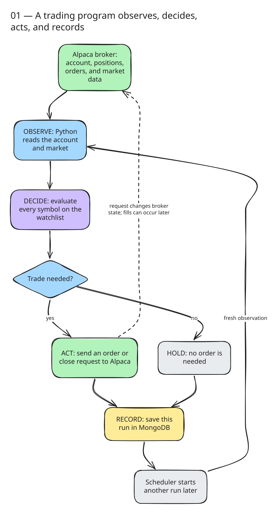
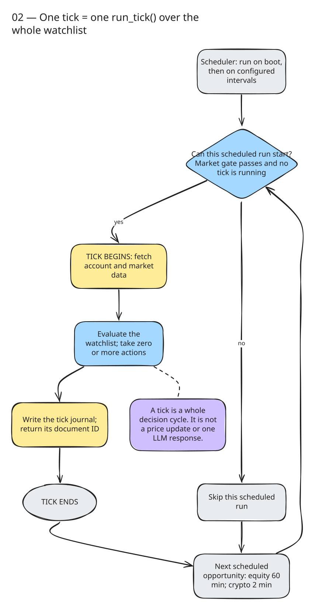
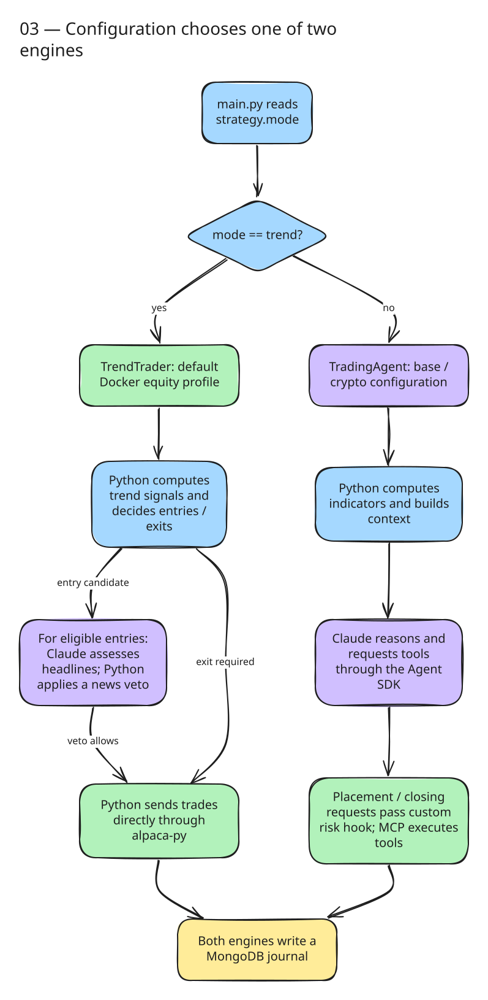
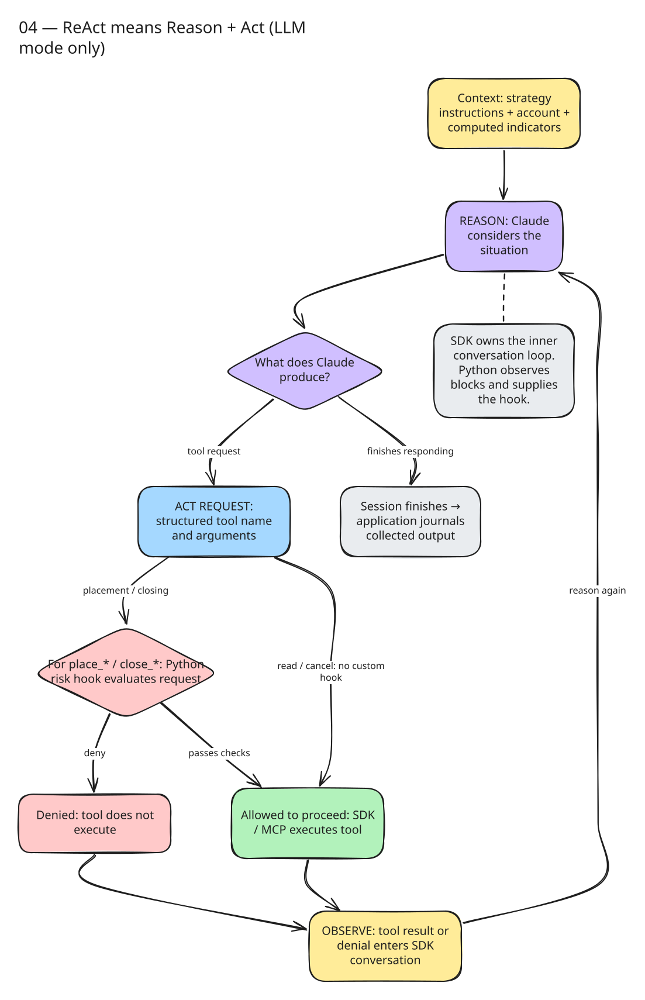
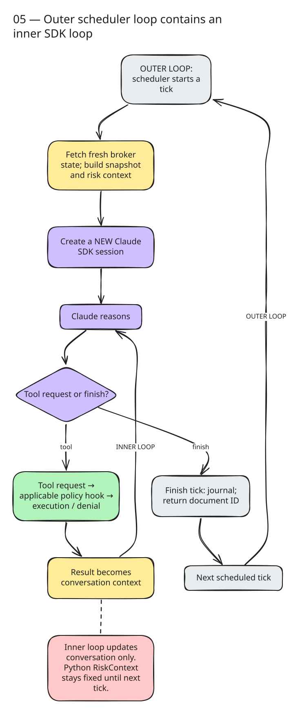
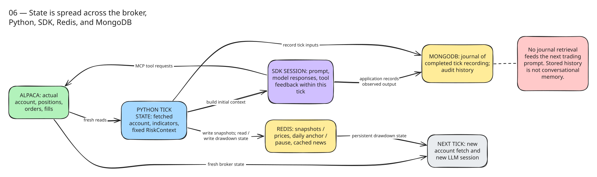
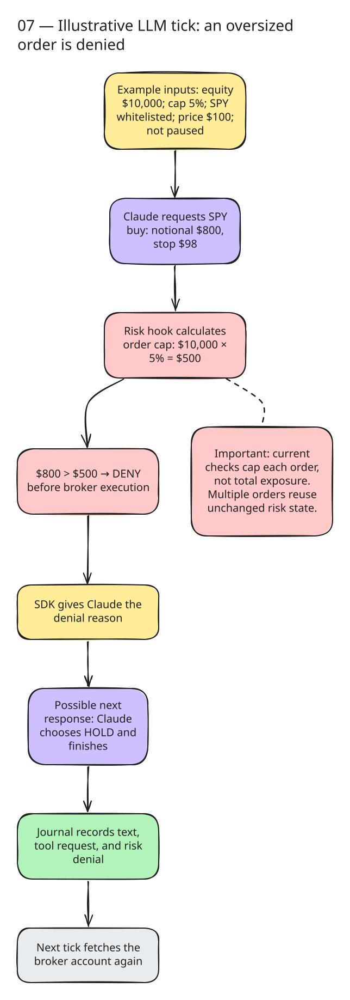
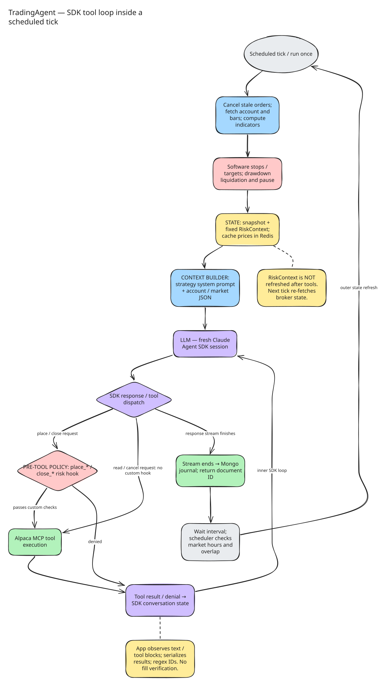
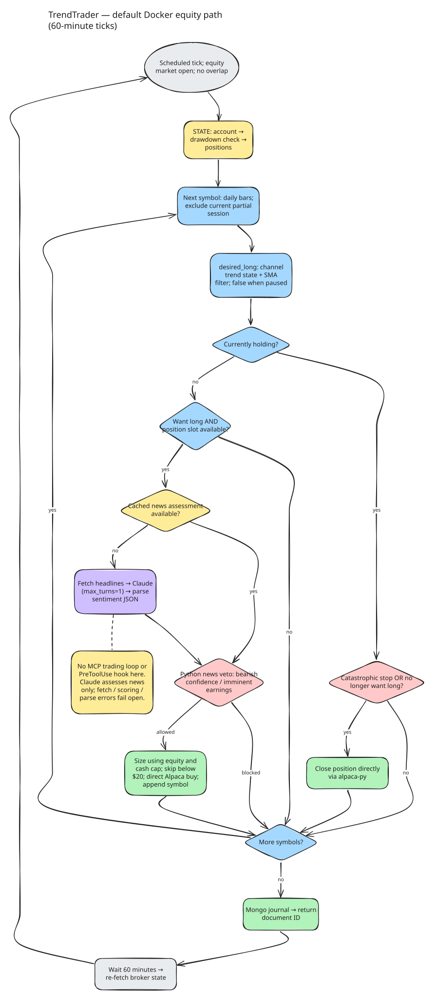

Start here · nine visual lessons
Understand the trading agent, from the basics
What is a tick? What does the AI actually do? Follow one decision from market data to an order, then see how the program starts again.
This guide follows the Python implementation and checked-in configuration. The default Docker equity service uses deterministic trading rules with a Claude news veto. A separate LLM mode runs a ReAct-style tool loop. These are different engines.
Start with lessons 1–2, then work down the page. Rectangles are steps, diamonds are questions, and returning arrows mean repetition. Each diagram is exported from its saved Drawpro sheet. Select an image to inspect it at full size; PNG downloads and editable source files are available below every figure.
1. The basic idea: observe, decide, act, record
Imagine someone checking a shopping list against their wallet and the prices in a shop. This program does a similar job with a watchlist: the configured list of stock or crypto symbols it is allowed to consider. Alpaca is the broker service that supplies account information and receives trading requests.
The program reads what it owns and what the market is doing, decides whether anything should change, sends any needed requests, and writes a diary entry. Doing nothing is a valid decision, called HOLD. An order is a request to trade; a fill is the broker actually executing it. Sending an order does not mean it has already filled.

Code: main.py
2. A tick: one complete check of the watchlist
A tick in this code means one call to run_tick(). It covers the whole watchlist, not one symbol, one price change, or one message from Claude. One tick can place several orders, place none, or encounter an error.
The scheduler is the timer around that function. It tries a tick on startup, then at fixed intervals. The equity configuration uses 60 minutes; crypto uses 2 minutes. An equity-only watchlist requires an open market. If any crypto symbol is configured, that market-hours gate passes at any time. Overlapping runs are prevented within this scheduler instance.
For example, if an equity tick starts at 10:00 and finishes at 10:03, the next scheduled opportunity is roughly 11:00, not 11:03. An interval that arrives while a tick is still running does not start a second concurrent tick. TRADER_RUN_ONCE calls the engine directly once and bypasses the scheduler checks.

Code: scheduler.py
3. Two engines: who actually decides?
The same application can run two different decision engines. main.py selects TrendTrader when strategy.mode equals trend; otherwise it selects TradingAgent. These are alternatives, not consecutive stages of one pipeline.
The default Docker equity service uses TrendTrader. Python calculates whether it wants to own a symbol. Before an eligible new entry, Claude can assess news and Python can veto the purchase. Exits use ordinary Python rules. Orders go directly to Alpaca through the alpaca-py library.
The LLM engine lets Claude choose trading actions. Python prepares indicators and supplies a risk hook, while the Claude Agent SDK manages model and tool interactions. This is the base configuration and the crypto profile's default mode. Docker keeps crypto and the MCP server behind optional profiles, so they do not start with a plain default launch.

Code: main.py
4. ReAct: reason, act, observe, repeat
LLM means large language model; Claude is the model used here. ReAct means Reason + Act. The model considers its context, requests a tool, sees the result, and can reason again. It is unrelated to the React website framework.
A tool call is a structured request with a tool name and arguments, such as a symbol and order amount. MCP is the interface used here to expose Alpaca tools. The SDK, or software development kit, runs the conversation and dispatches these requests. The application submits an initial message and listens to the SDK's response stream; it does not implement its own model/tool while-loop.
A policy gate is Python code run before selected tools. In this implementation the PreToolUse hook matches placement and closing requests. It can deny a request before execution. A denial is feedback the model can respond to. Data reads and cancellation do not match this custom hook. Passing the hook still leaves normal SDK permission handling and broker validation.

Code: mcp_client.py
5. Two loops, running at different timescales
The outer loop is the scheduler: start a tick, let it finish, and try another tick at a later interval. The inner loop exists inside an LLM tick: Claude reasons, requests tools, observes results, and may continue.
One tick might contain an account lookup, an order request, and a response to a denial before the session ends. Those are several interactions within one tick, not several scheduled ticks. The application then writes the journal and returns its document ID.
Each LLM tick creates a new SDK client without explicitly resuming the previous conversation. The inner conversation changes as results arrive, but the Python RiskContext is built once and remains fixed. The next outer tick fetches account data again. That difference matters: the model may have seen a new order result while the risk gate still sees the starting positions.

Code: agent.py
6. State: what the program knows, and where it lives
State means the information available at a particular moment: cash, positions, recent prices, conversation messages, or whether trading is paused. There is no single permanent brain holding all of it.
- Alpaca holds the actual broker account, orders, and positions. Each tick reads it again.
- Python variables hold the fetched account, calculated indicators, and the LLM engine's fixed risk inputs for this tick.
- The SDK session holds conversation context within an LLM tick.
- Redis is a fast store used for snapshots/prices in LLM mode, the daily drawdown anchor and pause, and cached news assessments in trend mode.
- MongoDB stores the tick journal: inputs, recorded decisions, and observed outputs for later inspection.
Redis and MongoDB serve different purposes. A cache lets the program reuse information, such as a recent news assessment. A journal is a historical record. The trading prompt does not retrieve previous journal entries. Saving a conversation is not the same as feeding it into the next conversation.

Code: persistence/cache.py
7. A worked example: why an order gets denied
This is an illustrative example, not a recorded trade. Suppose account equity—the account's total value—is $10,000, the configured per-order cap is 5%, SPY is allowed, and trading is not paused. The latest SPY price is $100.
- Claude requests an $800 SPY purchase with a stop at $98.
- The risk hook calculates $10,000 × 5% = $500.
- $800 exceeds $500, so the hook denies the request before it reaches Alpaca.
- The SDK makes that denial available to Claude. One possible response is to HOLD and finish.
- The application records the request and denial in the journal. No purchase resulted from this denied call.
This explains one successful guard, not a guarantee about every trade. The current check limits an individual order's notional amount—the dollar value requested. It does not add up existing exposure and all earlier requests in the tick. The risk context also does not reserve new position slots as orders are approved.

Code: risk/hook.py
8. The complete LLM tick
Now put the pieces together. TradingAgent.run_tick() first attempts to cancel stale open orders for configured symbols. It fetches the account and bars, then calculates indicators in Python. In long-only mode, it checks software stop/target exits before calling Claude. It also checks daily drawdown and can liquidate configured positions and pause new entries.
The context builder combines a strategy system prompt with a JSON account and indicator snapshot. The system prompt is built when the agent is constructed. A fixed per-tick risk context supplies equity, starting position symbols, prices, and the pause flag to the hook.
The SDK then runs the inner conversation. Python collects text blocks, tool requests, and tool results as they arrive. At the end, it serializes a journal document and returns the document ID. It does not return a typed BUY/SELL/HOLD decision object or verify that an order filled.
Read this diagram as the normal flow. Reconciliation errors are logged and tolerated. SDK exceptions are recorded when caught. Other preparation or journal failures can interrupt the tick before a journal document is written. Text stored under reasoning is collected model text, not a complete capture of every internal SDK event.

Code: agent.py
9. The complete default equity tick
TrendTrader.run_tick() fetches the account, checks drawdown, reads the market clock and positions, then processes symbols. It fetches daily bars and removes today's unfinished daily bar while the session is open. A bar summarizes prices over a period; its close is only final when that period is over.
The deterministic desired_long() function asks whether the latest upward channel breakout is more recent than the latest downward channel break and applies a moving-average filter. A channel is the range of earlier highs or lows; a moving average smooths prices over a window. This can identify an ongoing trend, so an entry does not require a fresh breakout on the current tick.
For an existing holding, the executor closes on a catastrophic stop or when it no longer wants the long position. For an eligible new entry with an available position slot, it checks news. Cached assessments avoid another model call. Otherwise it fetches headlines, asks Claude for sentiment JSON with max_turns=1, parses it, and applies the veto in Python. News can block an entry; it does not create one. The diagram assumes the news filter is enabled, as it is in the equity profile.
If allowed, Python sizes the entry from equity and available cash, skips amounts below $20, and sends a direct Alpaca buy. It adds the symbol to the local open-symbol list and continues. After the watchlist, it writes the journal. News fetch/scoring/parse failures generally fail open, meaning they do not veto; cache failures fall outside that fallback.

Code: trend_trader.py
What these diagrams do not guarantee
The diagrams show control flow, including intended guards. They are not proof that every requested order is safe or that every failure is recovered. These details in the current implementation are especially important:
- Risk inputs can be stale. LLM mode captures the account before software exits and does not refresh its risk context after each tool call. Multiple orders can each pass checks against the same starting position count. Individual size checks do not enforce total resulting exposure.
- The hook covers selected tools. Closing operations are allowed without a whitelist check; cancellation does not match the registered hook. Stop checks verify presence and distance, not a complete valid bracket or the correct stop direction. “One order per symbol” is a prompt instruction.
- Broker completion is separate. Tool results are serialized and possible order IDs are extracted with a regular expression. There is no application post-tool fill verification. Trend mode counts submitted buys locally but reuses starting cash for later affordability checks in the same tick.
- A pause is not proof of liquidation. The daily anchor is the first equity observation of a UTC calendar day. Scoped liquidation is best effort; its close helper suppresses individual failures and does not cancel pending orders. The drawdown monitor can latch a pause even if some positions remain.
- Failures can leave no journal. The full tick is not enclosed in one catch-all handler. Preparation, cache, and journal errors can escape. The LLM trading path does not set an explicit turn/budget limit or inspect SDK completion metadata.
For the actual checks, read the risk hook, the drawdown monitor, and the broker wrapper. The diagrams describe this repository's code paths, not a verified live deployment.